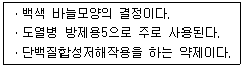
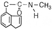
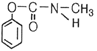
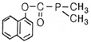
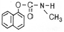
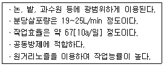

식물보호산업기사 (2007-03-04 기출문제)
1과목: 식물병리학
1. 배추 밭에 석회를 사용하여 토양의 pH를 높이면 무사마귀병의 발생은?
- 줄어든다.
- 많아진다.
- 변함이 없다.
- 사용초기에만 격발한다.
(정답률: 90%)

2. 어떤 병원체가 식물체내에 침입되어 병징이 나타나기까지의 기간은?
- 잠복기
- 사멸기
- 유도기
- 생식기
(정답률: 96%)
3. 다음 중 파이토플라스마병이 아닌 것은?
- 뽕나무 오갈병
- 대추나무 빗자루병
- 감자 걀쭉병
- 과꽃 누른오갈병
(정답률: 85%)
4. 벼 흰잎마름병의 병원은?
- 바이러스
- 파이토플라스마
- 세균
- 곰팡이
(정답률: 85%)
5. 다음 중 병징의 설명으로 틀린 것은?
- 벼 키다리병은 벼가 도장하고 황화, 고사한다.
- 사과나무 부란병은 줄기에 수침상 병무늬가 생기고, 알콜 냄새가 난다.
- 보리 속깜부기병은 이삭의 검정가루가 날아가고, 수확전에 이삭은 중축만 남는다.
- 벼 잎집무늬마름병(잎집얼룩병)은 잎집의 표면에 부정형 병무늬가 생기고, 병반위에 균핵이 형성된다.
(정답률: 56%)
6. 세포벽을 가지고 있지 않는 식물병원균은?
- Xanthomonas속
- Phytophthora속
- Phytoplasma속
- Xyrella속
(정답률: 79%)
7. 뿌리혹병의 생물적 방제에 이용되는 균은?
- Agrobacterium tumefaciens
- Agrobacterium radiobacter K84
- Aspergillus niger T27
- Aspergillus nidulans
(정답률: 80%)
8. 사과 축과병은 무엇이 결핍되서 일어나는가?
- 고토결핍
- 붕소결핍
- 인산결핍
- 석회결핍
(정답률: 94%)
9. 보리 붉은곰팡이균은 진균의 어떤 균류에 속하는가?
- 접합균류
- 불완전균류
- 자낭균류
- 담자균류
(정답률: 46%)
10. 감자 Y바이러스의 주요 매개충은?
- 번개매미충
- 끝동매미충
- 복숭아 혹진딧물
- 응애
(정답률: 73%)
11. 오이 모자이크병의 방제에 가장 효과적인 것은?
- 종자소독
- 윤작
- 매개곤충의 약제구제
- 포장위생
(정답률: 80%)
12. 한 품종이 숙기가 빨라서 병 발생을 모면하였다면 이것은 기주의 어떤 성질 때문인가?
- 저항성
- 회피성
- 내병성
- 면역성
(정답률: 93%)
13. 진균 중 유성번식을 하지 않거나 또는 매우 드물게 하는 병원균은?
- 난균류
- 불완전균류
- 자낭균류
- 담자균류
(정답률: 82%)
14. 특정산 병원균의 레이스에만 저항성을 나타내며 환경요인에 대해 안정적인 저항성은?
- 수평저항성
- 비특이적저항성
- 포장저항성
- 수직저항성
(정답률: 75%)
15. 다음 중 밀 줄기녹병의 중간기주는?
- 매발톱나무
- 향나무
- 작약
- 사시나무
(정답률: 71%)
16. 다음 중 표징으로 알콜 냄새가 나는 병은?
- 배나무 붉은별무늬병
- 벼 흰잎마름병
- 사과나무 부란병
- 배추 검은무늬병
(정답률: 92%)
17. 벼 오갈병을 매개하는 곤충은?
- 애멸구
- 끝동매미충
- 벼메뚜기
- 혹명나방
(정답률: 84%)
18. 병의 진단법에 대한 설명으로 틀린 것은?
- 혈청학적 진단은 항원-항체의 특이적 반응을 이용하는 것이다.
- 바이러스병의 진단에도 세포내 봉입체 관찰이 이용된다.
- TMV는 Nicotiana glutinosa에 전신병징을 나타낸다.
- 즙액접종법으로 오이 노균병과 세균성 점무늬병을 구분 진단할 수 있다.
(정답률: 68%)
19. 다음 중 화기감염 병은?
- 보리 겉깜부기병
- 오이 노균병
- 맥류 붉은곰팡이병
- 밀 줄기녹병
(정답률: 73%)
20. 병원체가 기주식물에 대해 병을 일으키는 능력은?
- 병징
- 발병
- 전염
- 병원성
(정답률: 84%)
2과목: 농림해충학
21. 소나무좀은 수목의 어느 부분을 주로 가해하는가?
- 잎을 가해한다.
- 목질부 속으로 들어가 가해한다.
- 수간(줄기)의 인피부를 가해한다.
- 뿌리를 가해한다.
(정답률: 65%)
22. 곤충의 섭식행동에 따른 분류에 대한 설명으로 틀린 것은?
- 메뚜기는 초식성 곤충으로 광식성(廣食性)이다.
- 포식성 곤충은 살아있는 곤충을 먹고 사는 곤충이다.
- 기생성 곤충은 죽어있는 곤충을 먹이로 한다.
- 내부기생성 곤충은 숙주의 조직 속에 침입하여 산다.
(정답률: 78%)
23. 딱정벌레목의 가뢰과에서 볼 수 있는 변태의 유형은?
- 무변태
- 과변태
- 완전변태
- 불완전변태
(정답률: 85%)
24. 날개, 다리, 촉각 등이 몸에 꼭 달라 붙어있는 모양의 번데기 즉 피용(被踊)은 주로 어느 목에서 볼 수 있는가?
- 나비목
- 벌목
- 파리목
- 딱정벌레목
(정답률: 70%)
25. 곤충의 암컷이 우화하여 알을 낳게 될 때까지의 기간은?
- 산란전기(간)
- 생활사
- 용기(간)
- 난기(간)
(정답률: 71%)
26. 곤충에서 암생식계의 구성요소가 아닌 것은?
- 알집
- 수란관
- 수정관
- 수정낭
(정답률: 79%)
27. 뒷날개가 평균곤(平均棍)으로 변형되어 비행 중 몸의 균형을 유지하는 곤충은?
- 벼메뚜기
- 쉬파리
- 호랑나비
- 호랑하늘소
(정답률: 79%)
28. 동일 살충제를 계속해서 쓰면 그 약제에 대한 저항성계통이 생기는데 곤충이 2종 이상의 살충제에 대하여 동시에 저항성을 나타낼 때 이를 무엇이라 하는가?
- 2차저항성
- 정상관저항성
- 부상관저항성
- 교차저항성
(정답률: 83%)
29. 곤충의 체벽구조에서 외부환경과 접하는 첫 번째 표피는?
- 외표피
- 외원표피
- 내원표피
- 진피세포
(정답률: 75%)
30. 내충성 밤나무의 보급으로 밤나무 식재면적이 늘어나면서 밤을 가해하는 종실해충의 피해가 심하다. 다음 중 밤(종실)을 가해하는 해충이 아닌 것은?
- 밤애기잎말이나방
- 박쥐나방
- 복숭아명나방
- 밤바구미
(정답률: 44%)
31. 다음 중 채찍꼴 모양의 더듬이를 지닌 곤충은?
- 무잎벌레
- 이화명나방
- 배추흰나비
- 뽕나무하늘소
(정답률: 59%)
32. 활엽수의 대부분을 가해하며, 특히 가로수와 정원수에 피해가 심한 미국흰불나방은 우리나라에서 연간 ( A )회 또는 그 이상 발생하며 월동충태는 ( B )이다. A, B에 해당되는 것으로 옳은 것은?
- A:1, B:알
- A:2, B:번데기
- A:3, B:유충
- A:4, B:성충
(정답률: 69%)
33. 거북밀깍지벌레의 월동태는?
- 알
- 약충
- 번데기
- 성충
(정답률: 56%)
34. 월동 중의 알덩어리를 손쉽게 발견하여 제거할 수 있는 해충들로 짝지어진 것은?
- 매미나방과 어스렝이나방
- 어스렝이나방과 솔나방
- 솔나방과 미국흰불나방
- 미국흰불나방과 매미나방
(정답률: 66%)
35. 곤충의 휴면을 유발시키는 요인이 아닌 것은?
- 먹이
- 천적
- 온도
- 일장 조건
(정답률: 81%)
36. 곤충의 소화기관 중 발생학적으로 내배엽성 기원을 가진 기관은?
- 기관계
- 전장
- 중장
- 후장
(정답률: 70%)
37. 주로 가해하는 대상이 과수가 아닌 해충은?
- 도둑나방
- 말매미
- 사과혹진딧물
- 모무늬잎말이나방
(정답률: 62%)
38. 곤충의 숨문(氣門)이 있는 곳은?
- 등판
- 옆판
- 배판
- 말피기관
(정답률: 58%)
39. 해충의 생태적 방제법에 대한 설명으로 틀린 것은?
- 주로 치료적 방제법으로 이용되며, 다른 방제법과 구별이 용이하다.
- 해충의 상태를 고려하여 발생 및 가해를 경감시키기 위해 환경조건을 변경하는 것이다.
- 재배방법을 개선하거나 재배시기를 변경하는 방법이 이용된다.
- 환경이나 다른 생물에게 나쁜 영향을 미치는 경우가 비교적 적다.
(정답률: 64%)
40. 다음 중 곤충강(綱)에 속하지 않는 해충은?
- 응애류
- 진딧물류
- 깍지벌레류
- 잎벌레류
(정답률: 82%)
3과목: 농약학
41. 다음 보기에서 설명하는 살균제는?

- 가스가마이신(Kasugamycin)
- 메틸브로마이드(Methyl bromide)
- 티람(Thiram)
- 클로로타로닐(Chlorothalonil)
(정답률: 75%)
42. NAC(카바릴)의 구조식은?




(정답률: 61%)
43. 농약관리법상 농약의 독성정도에 따른 독성 구분이 아닌 것은?
- 급성독성
- 저독성
- 고독성
- 맹독성
(정답률: 83%)
44. 농약의 구비조건이 아닌 것은?
- 인축에 대한 독성이 낮아야 한다.
- 작물에 대한 약해 작용을 일으켜서는 안 된다.
- 토양에 오래 잔류하여야 한다.
- 다른 약제와 혼용이 가능하고 천적, 어류에 대한 독성 낮아야 한다.
(정답률: 85%)
45. 유제에 사용되는 유기용제를 줄이기 위한 방안으로 개발된 제형은?
- 미탁제(ME)
- 액제(SL)
- 분산성 액제(DC)
- 수용제(SP)
(정답률: 55%)
46. 농약을 제조하는데 보조제로서 사용되는 계면활성제의 작용이라고 볼 수 없는 것은?
- 유화 작용
- 세정 작용
- 분산 작용
- 불용화 작용
(정답률: 73%)
47. 고독성 농약 중 조달청, 식물검역소, 수출입식물방제업자 등으로 공급대상을 규제 관리하고 있는 품목은?
- 이피엔유제
- 아진포 액제
- 인화늄 정제
- 포스팜 액제
(정답률: 51%)
48. 호르몬 작용을 가지고 있는 Phenoxy계 제초제 농약이 아닌 것은?
- 씨마진
- 2,4-D
- MCP
- MCPP
(정답률: 80%)
49. 유기인계나 카바메이트계 농약의 살충제가 충(蟲)내에 침입하여 독작용을 나타내는 작용점은?
- 원형질
- 피부
- 근육
- 신경
(정답률: 87%)
50. 다음 보기의 특성을 갖는 농약살포기는?

- 배부식 분무기
- 동력살분무기
- 동력분무기
- 고성능분무기
(정답률: 62%)
51. 수화제를 물에 풀면 물에 녹지 않은 원체나 증량제의 미립자가 균등히 분산된 살포액을 무엇이라 하는가?
- 유탁액
- 용액
- 현탁액
- 미탁액
(정답률: 70%)
52. 농약을 살포할 때 농작물에 농약이 잘 부착되도록 사용하는 보조제는?
- 용제(溶劑)
- 증량제(增量劑)
- 전착제(展着劑)
- 협력제(協力劑)
(정답률: 86%)
53. 우리나라에서 농작물을 가해하는 해충 중 알→약충→성충의 생활사를 갖는 불완전 변태로서 주로 흡즙피해를 유발하는 해충은?
- 벼멸구
- 혹명나방
- 이화명나방
- 굴파리
(정답률: 84%)
54. 해충이나 식물체 표면에서 약제의 부착 및 고착성을 향상시키기 위하여 사용하는 첨가제는?
- 규조토
- 탄화수소류
- 카세인
- 알콜류
(정답률: 46%)
55. 경구독성이 가장 강한 농약은?
- 나크(Carbaryl)
- 다이아지논(Diazinon)
- 이피엔(EPN)
- 디디브이피(DDVP)
(정답률: 59%)
56. 액체를 포유동물에 경구 투여한 고독성농약을 반수치사약량(mg/kg체중)으로 나타낸 수치로서 옳은 것은?
- 20미만
- 20~200미만
- 200~2000미만
- 2000 이상
(정답률: 85%)
57. 보르도액의 사용상 주의사항으로 옳지 않은 것은?
- 만든 즉시로 살포하여야 하며 오래 두면 입자가 커져 약효가 떨어진다.
- 살포액이 완전 건조해서 막을 형성해야 하므로 비가 오기 직전이나 직후에 살포해서는 안 된다.
- 치료를 목적으로 사용하는 것이므로 발병 후 즉시 살포해야 한다.
- 약해가 나기 쉬운 작물에 대해서는 8~10두씩 묽은 보르도액을 살포해야 한다.
(정답률: 82%)
58. 농약의 약해증상 중 경엽에 나타나는 현상이 아닌 것은?
- 백화
- 괴사
- 낙엽 및 기형잎
- 발근저해
(정답률: 80%)
59. 제충국(pyrethrin)의 특성으로 옳은 것은?
- 속효성이다.
- 잔효성이 크다.
- 약해가 크다.
- 고독성 농약이다.
(정답률: 70%)
60. 약제를 뿌리고 경엽이나 뿌리에 의하여 흡수되어 정상이상으로 호르몬의 양이 많아져 생리적인 불균형 상태가 나타나 잡초를 죽게 하는 약제는?
- 시마진 수화제
- 프로린 수화제
- 2,4-D 액제
- 트리므론 수화제
(정답률: 80%)
4과목: 잡초방제학
61. 작물과 잡초간의 경합에서 가장 큰 경합을 나타내는 무기원소는?
- P
- K
- N
- Ca
(정답률: 82%)
62. 작물이 잡초와의 경합에 가장 민감한 시기가 있는데 이것을 잡초경합 한계기간이라 한다. 다음 중 한계기간이 가장 긴 작물은?
- 양파
- 녹두
- 밭벼
- 콩
(정답률: 74%)
63. 잡초 종자의 발아 특성에 관한 설명으로 틀린 것은?
- 논에서 자라는 잡초들은 밭에서 자라는 잡초들보다 산소 요구도가 낮은 편이다.
- 토양 비옥도에 따라 발생하는 잡초종이 달라질 수 있다.
- 잡초종자는 대체로 종자가 크고 무거울수록 출아심도가 깊다.
- 대부분의 잡초 종자는 토양 수분이 55% 이하에서 발아가 양호하다.
(정답률: 65%)
64. 광엽 다년생 잡초인 것은?
- 올미
- 자귀풀
- 마디꽃
- 여뀌
(정답률: 77%)
65. 농경지에서 잡초를 방제하지 않을 때 나타나는 손실(피해)과 관계가 없는 것은?
- 작물의 수량 감소
- 농산물의 품질 저하
- 병ㆍ해충의 발생 증가
- 토질개선
(정답률: 88%)
66. 잡초에는 경합력이 저하되도록 유도하는 대신 작물에는 경합력이 높아지도록 재배관리를 해주는 잡초방제 방법은?
- 생태적 방제법
- 화학적 방제법
- 물리적 방제법
- 생물적 방제법
(정답률: 80%)
67. 흡수 이행성의 제초제가 아닌 것은?
- Trifluralin
- Dicamba
- Mecoprop
- 2,4-D
(정답률: 57%)
68. 주로 광합성을 억제하는 제초제는?
- 마세트(Butachlor)
- 씨마진(Simazine)
- 사단(Thiobencarb)
- 이사디(2,4-D)
(정답률: 57%)
69. 다음 벼 재배방법 중 잡초종류와 발생량이 가장 적은 것은?
- 중묘기계이앙
- 어린모기계이앙
- 담수직파
- 건답직파
(정답률: 76%)
70. 제초제의 선택성에 관여하지 않는 요인은?
- 식물체 생장점의 위치
- 식물체 뿌리의 분포상태
- 식물체 생육기의 차이
- 식물체 건물중의 차이
(정답률: 78%)
71. 형태적 분류상 바랭이는 어떤 잡초에 속하는가?
- 화본과 잡초
- 광엽 잡초
- 방동사니과 잡초
- 국화과 잡초
(정답률: 70%)
72. 다음 중 잡초의 물리적 방제법이 아닌 것은?
- 예취
- 침수처리
- 시비
- 열처리
(정답률: 75%)
73. 작물과 잡초의 경합 중 가장 피해가 큰 경합은?
- 종간경합
- 종내경합
- 속간경합
- 이종경합
(정답률: 58%)
74. 종자 자체의 조성이나 구조에 기인하여 발아하지 못하는 휴면은?
- 자발휴면
- 타발휴면
- 강제휴면
- 유도휴면
(정답률: 68%)
75. 잡초의 전파매체로 가장 부적합한 것은?
- 사람
- 동물
- 물과 바람
- 식물체
(정답률: 78%)
76. 논 다년생 잡초가 증가하는 가장 직접적인 요인은?
- 경운 정지법의 변화
- 재배시기의 변동
- 동일 제초제의 연용
- 시비량의 증가
(정답률: 78%)
77. 다음 잡초 중 지하경에 의해서 주로 번식되는 것은?
- 피
- 바랭이
- 물달개비
- 가래
(정답률: 72%)
78. 다음 중 농경지에서 잡초군락의 천이에 가장 적게 영향을 미치는 요인은?
- 제초방법
- 물관리
- 기상
- 작부체계
(정답률: 62%)
79. 다음 중 잔디밭의 클로버 방제에 가장 적절한 제초제는?
- 엠시피피 액제
- 부타 유제
- 모리네이트 입제
- 옥사디아존 유제
(정답률: 63%)
80. 잡초의 초형이 가장 작은 잡초로만 나열된 것은?
- 피, 가막사리
- 바랭이, 쇠비름
- 올방개, 망초
- 올미, 쇠털골
(정답률: 49%)